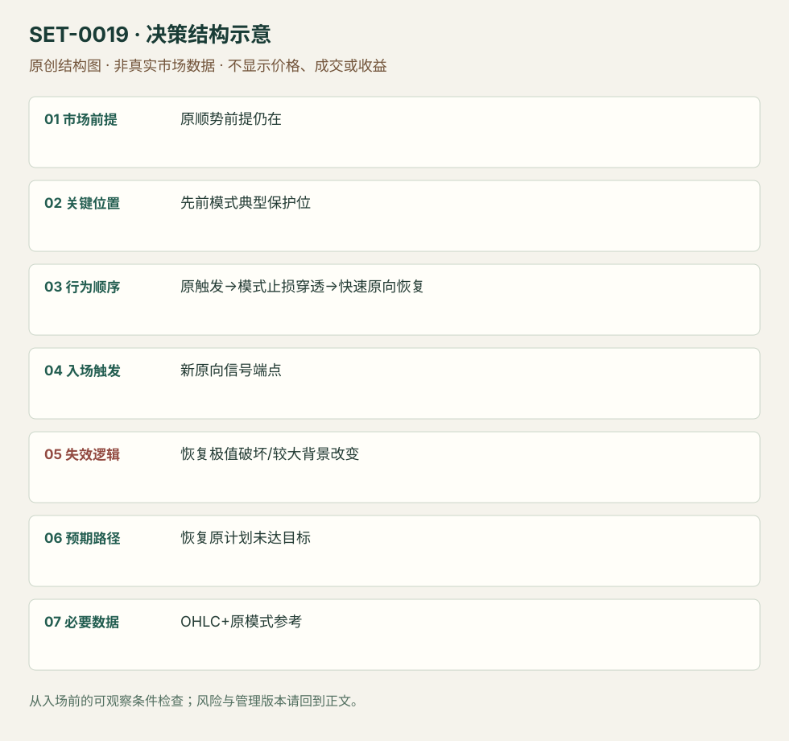

原始顺势信号止损后快速恢复的延迟入场
Stopped-Out Setup Re-entry · SET-0019 · reviewed · v1.0.0
盈利证据：not_established。审查范围与来源版本见第13节；未知字段保留缺失原因。
1. 名称与快速概览
先观察某个顺势模式已触发，再看到其典型模式止损被穿透而较大方向前提尚在；价格快速恢复后才执行延迟入场。背景已经转向就禁止再入。
记录口径：PA core；必要数据 OHLC、original_pattern_stop_reference。名称性质：编辑性描述名，英文保留来源术语以便检索。reviewed 只表示本条规则与证据记录审查通过，盈利状态为 not_established。
2. 本质与行为假说
可以观察触发价、典型止损和恢复；不能证明具体交易者真的被止损。本条不要求研究者先亏一笔，原始信号可只观察。
3. 适用市场与环境
原方向依据、原模式触发和模式保护位事先有记录，穿透后方向依据仍成立。本版直接日内例是Galen的CL三分钟NR7失败后再入讨论；6E/6J较长、跨日图只用于定义与失败边界。ES Retrace逆向失败后双底只能算相关观察，不能支持本条“原顺势前提”本身。
来源实际日内市场：NYMEX CL期货3分钟。
Session：CL来源图未标时区；图有01:40–03:30片段与右侧缺口，不能推定现金开盘。编辑执行限定所选合约同一交易日，事先锁定截止时刻和平仓；跨日6E/6J仅作背景边界。
跨市场迁移未验证。
4. 出现前的观察清单
必要：原模式完整、已实际穿触发价、其模式止损被穿、背景仍有效。增强：迅速恢复。否决：原目标已到、穿透很深或经历长时间新趋势。
5. 形成过程与状态转换
原信号完成（不入）→触发→模式保护位被穿→无持续反向推进→原向新信号→延迟入；若较大背景已破则终止。
6. Entry trigger 与执行方式
Galen Pin版以新的原向柱端点触发，支持以别的模式作为原信号。文章空头规则写buy却描述向下突破，按卖出镜像理解并标出文字冲突，不机械执行错方向。
CL日内版本：原空头模式止损被扫后仍未站上背景EMA，等待新的向下恢复端点再入。来源允许再入但未披露第二笔精确价或订单，因此新端点触发是编辑操作化版本，必须单独记录。
7. Invalidation 与止损逻辑
新的恢复摆动极值是本次风险；更大方向依据破坏为环境否定。不能无限重复“再入”，也不能从第一笔止损后报复性加仓。
8. Exit、target 与 trade management
先看原先未达到的目标/摆动；若原目标已到才止损，其后再入没有原机会空间，来源视为差背景。弱恢复与当日时限退出属研究模块。
9. 常见 variations
先交易原信号再入与跳过原信号后入分开记录净结果；多空镜像、Pin/其他模式变体合并。
10. 失败方式与不交易条件
正常亏损：新信号后再破恢复极值。未成立：较大方向已反转。偏离：只因亏损而反复加仓。6J失败例原/新信号距离大且跌至均线下，提示前提改变。
11. 与相近 setups 的区别
12. 图表与案例解读
已查看6E30分钟图及ES日内亏例。6E图先有Pin触发、低点被穿、随后新Pin恢复；图轴跨当地午夜，日期11/4/2014歧义且原方法未声明平仓，不当成已证日内收益。ES1分钟图的绿色首交易失败后橙圈双底是候选新机会；不能以第二次上涨覆盖第一笔亏损。
- [VIS-000019] Forex Price Action Re-Entry Trading Strategy (Winning)；定位：Example #1 Bullish Re-entry。原信号触发、保护位穿透、新Pin恢复，原文范围不限严格日内。 验证：chart_viewed。
- [VIS-000020] Retrace Day Trading Setup Losing Trade；定位：Losing Trade后续double bottom。日内原反向模式止损后另有双底候选，未披露实际第二笔成交。 验证：chart_viewed。


补充已查看CL02-14三分钟NR7失败图：黑框中的连续窄柱先向下触发，随后上穿模式高点止损；价格始终未越20EMA，之后再次向下。可观察的是原笔亏损和背景保持；新一笔成交与结果未披露。图日期原写3/1/2014，月日顺序未核实。
- [VIS-000057] NR7 Trading Strategy Losing Trade；定位：Losing Trade – Bearish NR7，黑框、EMA和止损区域。CL02-14三分钟原空头NR7止损后，EMA下方背景仍在；后续再入只是作者允许的机会，未披露实际第二笔订单。 验证：chart_viewed。

本地原创示意（VIS-000076，非真实市场数据）：

小屏阅读可打开原尺寸示意图并缩放。

此图用于对照识别顺序与风险定义；不计入真实案例覆盖率。
视觉材料元数据与查看范围
- VIS-000019 · real_source_chart / cross_session_context_only / chart_viewed
品种：6E 09-14；日期：未知/不适用；周期：30分钟；时区：未知/不适用
日期未在图中核对；时区未在图中核对；来源图表不是成交审计 - VIS-000020 · real_source_chart / related_countertrend_context_only / chart_viewed
品种：ES 09-13；日期：2013-07-27；周期：1分钟；时区：未知/不适用
时区未在图中核对；来源图表不是成交审计 - VIS-000057 · real_source_chart / structure_and_trigger / chart_viewed
品种：CL02-14；日期：未知/不适用；周期：3分钟；时区：未知/不适用
日期未在图中核对；时区未在图中核对；来源图表不是成交审计 - VIS-000076 · synthetic_structure_diagram / illustration_only / generated_not_market_evidence
品种：未知/不适用；日期：未知/不适用；周期：未知/不适用；时区：未知/不适用
无真实品种、日期或价格：这是结构示意
13. 证据、分歧与未知项
两份材料同为Galen，独立佐证有限；日内子样本和平仓为编辑边界。原始方法的所有跨日例不能计入日内实证。
- [EVD-000034] Galen Woods，《Forex Price Action Re-Entry Trading Strategy》，SRC-0048；定位：Formulating、Guidelines、Winning/Losing examples。支持：原信号已触发、模式止损被小幅穿透、原方向背景仍在，再恢复时才进
- [EVD-000035] Galen Woods，《Bulkowski's Retrace Day Trading Setup》，SRC-0053；定位：Losing Trade后续double bottom。支持：第一次日内反向信号止损后出现双底和可再入机会
- [EVD-000101] SRC-0051；定位：Losing Trade – Bearish NR7 / Review。支持范围：CL三分钟顺势NR7原触发后止损于NR7高点；假突破期间价格一直在EMA下，原空头前提未改变，作者允许再入。拥挤是原笔亏损原因，不能用后来下跌抹去亏损。
新增CL日内例仍来自Galen同一族，故独立佐证有限。Source 53仅作逆向原模式失败后出现新结构的背景信息，不能冒充本条核心顺势规则的第二份验证。
审查边界：来源份数与独立核心核验分开；当前类别为 limited_single_family。正文中的概念、官方事实、衍生解说或同族资料只按其支持范围使用。
14. 可用于复盘的检查表
- ☐ 下单前的前提可核对：原顺势前提仍在
- ☐ 事前标记位置：先前模式典型保护位
- ☐ 行为按顺序出现：原触发→模式止损穿透→快速原向恢复
- ☐ 实际触发符合选定版本：新原向信号端点
- ☐ 事先写明本次否定条件：恢复极值破坏/较大背景改变
- ☐ 目标/路径只用当时已知信息：恢复原计划未达目标
- ☐ 数据满足 OHLC+原模式参考；记录时间、点差、滑点、队列和未成交
- ☐ 记录截止平仓及规则偏离；正常亏损不事后改成“未成立”
15. 后续验证问题
预先指定典型模式止损与有限穿透标准，单独统计严格当日子样本；区分观察延迟入与实际先亏后再入。
双向相关导航
- SET-0006 趋势中的两段回撤第二次入场 H2只要求首次恢复失败，本条必须典型触发已发生且对应模式止损被穿。
- SET-0005 内包线突破失败陷阱 Hikkake不要求先前顺势模式已触发且其止损被扫。